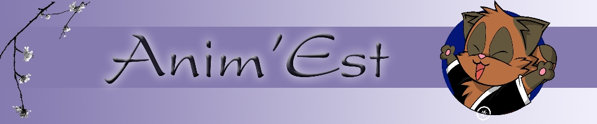

Quelques Liens :
-
Onemanga
un des plus gros site de scantrad en anglais regroupant les mangas les plus connus.
-
Team MFT
Une des teams traduisant les Naruto
-
Team BKT
Pour les fans de Bleach
-
Team OPS
The Team OnePieceScan pour les amis de Luffy